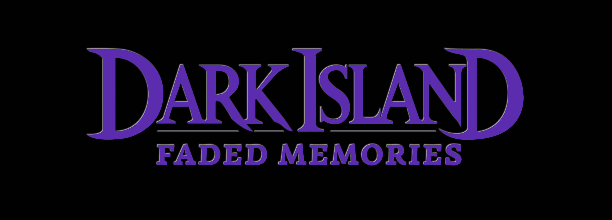

Ornate button
Silver frame, notched top and bottom edges, navy glow. Turns gold when focused.
Used in: settings wheel, dialogs
Ride dragons across forgotten islands. Explore the ruins of a world that fell long ago. Face monsters and fallen soldiers lurking in the dark. Play alone or join friends in co-op mode. Nostalgic graphics and style that bring back the magic of childhood. Original Steam text: “Monte dragões por ilhas esquecidas. Explore as ruínas de um mundo que caiu há muito tempo. Enfrente monstros e soldados caídos à espreita na escuridão. Jogue sozinho ou junte-se aos amigos no modo cooperativo. Gráficos e estilo nostálgicos que trazem de volta a magia da infância.”

Silver frames, gold selection and small diamond tips give the interface a high-fantasy tone, while flat navy panels keep text readable.
The HUD sits on foggy 3D scenes. Gold on navy and a strict resource colour code (blue, purple, red) keep it legible in day and night.
Every screen is driven by A / B / X, LB / RB and LT / RT. Focus is always visible, and the hint bar mirrors the active device.
A touch of chromatic aberration and soft scanlines echo the childhood-era look of the Steam pitch, and the player can tune both in Settings.
The wireframes the prototypes are built from. Click any image to enlarge it.
Boss bar, the weapon cluster with three load-out layouts, stamina / mana / health bars, currency, item-pickup notifications and NPC nameplates, over a day or a night scene.
Three load-outs, flask and armor slots around a character, and a tabbed inventory. Tooltips explain an item, and compare mode puts the equipped and candidate items side by side.
A rotating radial menu on the left and a tabbed panel on the right, with the same header and shoulder-button paging as Equipment.
The components the three screens are assembled from. Each one has states, and the prototypes rebuild them in code from these references.
Silver frame, notched top and bottom edges, navy glow. Turns gold when focused.
Icon, name and level badge. The selected row gets a gold name, gold rule and a dark spotlight under the text.
Default, selected (gold), selected with corner flourish, grouped in a gold panel, and a greyed disabled state.
Two large active slots and four small ones. The active pair moves left, centre or right with the load-out.
Painted item art for weapons and spells, plus single-colour glyphs for categories, shields, flasks, helms and hand requirements.
Green up and red down arrows for comparison, a neutral diamond, and the mountain and arrowhead ornaments.
#E3C61A selection, titles#CFD3DC frames, body#1D44AD → #0A1233 panels#5BE08B stronger#F0585C weaker, health#8A5AE0How the screens connect in the prototypes. LB and RB move between the main menu pages, and Continue always returns to the game.
Clickable, in the browser, and connected: items you equip appear in the HUD, and the graphics options change the HUD scene. They have no portfolio chrome, so they play like the game screens.
Day and night scenes, bars, load-out cluster, pickups, nameplates. A demo panel (?) triggers game events.
Open HUD →Browse the inventory, compare items against a slot, equip, unequip or drop. Stats update live.
Open Equipment →
A rotating menu with real controls: toggles, sliders and selectors, saved in your browser.
Open Settings →The logo uses a gothic serif with a flared initial, over a recurring dragon motif. The UI borrows its mood in the ornate frames and the display type, but stays quieter so the world remains the star. Brand assets appear only on this page, never inside the prototypes.
Primary, black
Pixel texture

Outline on dark
Stacked
Game: Harpia Games and Venn.
UI design and logo design: David Smith, all of it: the HUD, equipment and settings screens, the UI kit, the prototypes on this page and the logo and brand.
The game is on Steam ↗.
The Map screen, co-op UI and real settings content are not in the wireframes yet. The settings in the prototype are illustrative.